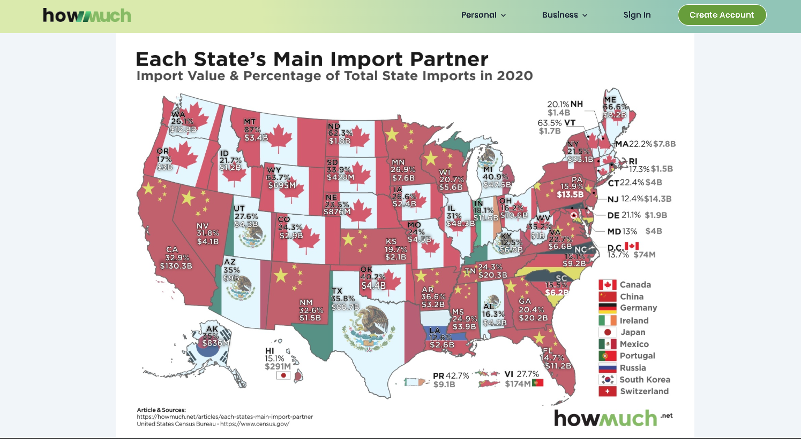

Verifying data integrity in a published visualisation
About this exercise
This exercise asked me to pick a published data visualisation, trace it back to its original data source, and check whether the values shown were accurate. This matters because verifying the data helps us decide whether a published chart is trustworthy and whether the conclusions we take from it are supported by the original data.
Chosen visualisation

1. Original data source
The visualisation's underlying data was traced to the U.S. Census Bureau's state-level import statistics (Imports, State of Destination), published as part of their Foreign Trade data series.
2. Variables visualised
| Variable | Unit | Level of measurement |
|---|---|---|
| Import partner country | — | Nominal |
| Import value | USD ($) | Ratio |
| % of total state imports | Percent (%) | Ratio |
3. Data–question alignment (Junk Charts Trifecta)
The implied question (Q) behind this visualisation is: "Who does each U.S. state import the most from, and how dominant is that partner?" The data used aligns well with this question, as it directly identifies each state's main import partner and shows both the dollar value and percentage share of imports coming from that partner. According to the Junk Charts Trifecta Checkup framework, strong D–Q alignment exists when the data measures what the question asks, and here the two match closely. However, the visualisation only shows the single largest partner for each state, rather than the full distribution of all trading partners. This means the data answers "who is the biggest partner" well, but cannot show how concentrated or diversified a state's overall import portfolio is — a limitation of scope rather than a flaw in the underlying data.
4. Verification of values
| State | HowMuch.net value | Census Bureau value | Discrepancy? |
|---|---|---|---|
| Montana (Canada) | 87%, $3.4B | 87.002%, $3,431,823,908 | Negligible — rounding only |
To verify the accuracy of the original visualisation, I selected Montana as a data point, since it showed the highest single-partner dependency on the map (87% of imports from Canada). Using the U.S. Census Bureau's USA Trade Online tool, I retrieved the 2020 import figures for Montana: total imports from Canada were $3,431,823,908, against total state imports of $3,944,504,775, giving a calculated share of 87.002%. This matches HowMuch.net's reported figures of 87% and $3.4 billion almost exactly, with the tiny difference attributable to rounding rather than any error. Based on this verification, I am confident the original visualisation accurately represents the underlying Census Bureau data, at least for the data point checked.
5. Source quality & limitations
The United States Census Bureau is an authoritative and credible source of information about U.S. trade statistics due to its role as the official U.S. government agency charged with collecting and disseminating such data. While the data has a few strengths, there are also several limitations. One limitation of the data is that foreign trade zone (FTZ) shipments are included in state totals. A second limitation is that the state of destination measure may not accurately reflect the actual location of consumption/usage of imported goods. Finally, the data presented in this visualisation is not seasonally adjusted; therefore, users must consider the impact of seasonal variations on their interpretation of the data.
Reference
HowMuch.net. (2021, June 2). Each state's main import partner. https://howmuch.net/articles/each-states-main-import-partner
U.S. Census Bureau. (2021). Imports, state of destination [Data set]. https://www.census.gov/foreign-trade/statistics/state/data/imports/index.html